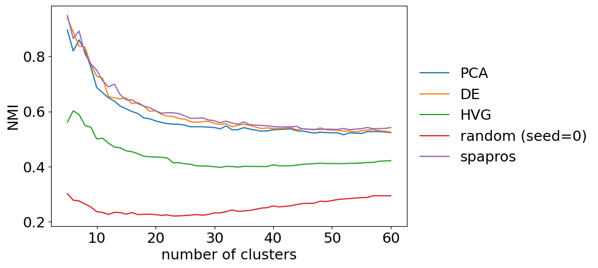

Advanced evaluation
! This tutorial will be updated the next days !
In this tutorial we evaluate probesets in finer detail: besides the summary values for each metric (see basic evaluation tutorial) we can get e.g. per gene and per cell type information of each evaluation.
Content
0. Import packages and setup
To run the notebook locally, create a conda environment using this yaml file:
conda create -f environment.yaml
Then add the conda environment as ipython kernel:
python -m ipykernel install --user --name spapros --display-name Python (spapros)
[2]:
import spapros
from spapros import se, ev, pl
from IPython.display import clear_output
import scanpy as sc
import pandas as pd
import os
import yaml
import matplotlib as mpl
import matplotlib.pyplot as plt
[3]:
sc.settings.verbosity = 0
sc.logging.print_header()
print(f"spapros=={spapros.__version__}")
scanpy==1.8.2 anndata==0.8.0 umap==0.5.2 numpy==1.21.5 scipy==1.7.3 pandas==1.3.5 scikit-learn==1.0.2 statsmodels==0.13.2 python-igraph==0.9.9 pynndescent==0.5.6
spapros==0.1.0
1. Load dataset
[4]:
adata = sc.datasets.pbmc3k()
adata_tmp = sc.datasets.pbmc3k_processed()
adata = adata[adata_tmp.obs_names, adata_tmp.var_names]
adata_raw = adata.copy()
sc.pp.normalize_total(adata, target_sum=1e4, key_added="size_factors")
sc.pp.highly_variable_genes(adata, flavor="cell_ranger", n_top_genes=1000)
adata.X = adata_raw.X
sc.pp.log1p(adata)
adata.obs['celltype'] = adata_tmp.obs['louvain']
adata
[4]:
AnnData object with n_obs × n_vars = 2638 × 1838
obs: 'size_factors', 'celltype'
var: 'gene_ids', 'highly_variable', 'means', 'dispersions', 'dispersions_norm'
uns: 'hvg', 'log1p'
2. Set up the ProbesetEvaluator
[5]:
# loading metric parameters from file
param_yaml = "../tutorials/data/pbmc3k_parameters.yml"
with open(param_yaml, "r") as file:
custom_params = yaml.load(file, Loader=yaml.FullLoader)
custom_params
[5]:
{'data': {'name': 'adata_pbmc3k', 'celltype_key': 'celltype'},
'metrics': {'cluster_similarity': {'ns': [5, 21],
'AUC_borders': [[7, 14], [15, 20]]},
'knn_overlap': {'ks': [5, 10, 15, 20, 25, 30]},
'forest_clfs': {'ct_key': 'celltype', 'threshold': 0.8},
'marker_corr': {'per_celltype': True,
'per_marker': True,
'per_celltype_min_mean': None,
'per_marker_min_mean': 0.025},
'gene_corr': {'threshold': 0.8}}}
[6]:
# initialize an ProbesetEvaluator
evaluator = ev.ProbesetEvaluator(adata,
# metrics_params=custom_params,
scheme="full",
marker_list="../data/pbmc3k_marker_list.csv",
verbosity=2,
results_dir=None)
3. Run evaluation methods
[11]:
# select reference probesets with basic selection methods
selections = se.select_reference_probesets(adata, n=50, verbosity=2)
# highly variable genes were only needed for the selection
del adata.var["highly_variable"]
# this is the probeset selected in the standard selection section of the spapros_tutorial_advanced_selection
# genes = ['LST1', 'HLA-DPB1', 'HLA-DQA1', 'IL32', 'GZMB', 'CCL5', 'S100A8',
# 'GNLY', 'NKG7', 'CD79A', 'TYROBP', 'HLA-DPA1', 'AIF1', 'SAT1', 'LTB',
# 'UBXN1', 'CTSW', 'FCER1A', 'FCN1', 'LGALS2', 'IRF8', 'IGFBP7', 'FERMT3',
# 'CST3', 'CST7', 'GZMK', 'FGFBP2', 'LYAR', 'VAMP5', 'ATP5A1', 'HLA-DQB1',
# 'MS4A6A', 'PSME1', 'ATP5H', 'LAMTOR1', 'PPP1R2', 'CD79B', 'KLRG1',
# 'LINC00926', 'TIGIT', 'CCT7', 'PDIA3', 'GIMAP7', 'HLA-DRB1', 'CAPZB',
# 'ARF6', 'UBE2L6', 'IGLL5', 'PNRC1', 'OAS1']
genes = ['LST1', 'HLA-DPB1', 'HLA-DQA1', 'IL32', 'GZMB', 'CCL5', 'S100A8',
'GNLY', 'NKG7', 'CD79A', 'TYROBP', 'HLA-DPA1', 'AIF1', 'SAT1',
'LTB', 'UBXN1', 'CTSW', 'FCER1A', 'FCN1', 'LGALS2', 'IRF8',
'IGFBP7', 'FERMT3', 'CST3', 'CST7', 'GZMK', 'FGFBP2', 'LYAR',
'VAMP5', 'ATP5A1', 'HLA-DQB1', 'MS4A6A', 'PSME1', 'ATP5H',
'LAMTOR1', 'PPP1R2', 'CD79B', 'KLRG1', 'LINC00926', 'TIGIT',
'CCT7', 'PDIA3', 'GIMAP7', 'HLA-DRB1', 'CAPZB', 'ARF6', 'UBE2L6',
'IGLL5', 'PNRC1', 'OAS1']
# we add it to the dictionary of probesets
selections["spapros_selection"] = pd.DataFrame({"selection": [True if g in genes else False for g in adata.var_names]}, index=adata.var_names)
---------------------------------------------------------------------------
KeyError Traceback (most recent call last)
~/anaconda3/envs/spapros/lib/python3.8/site-packages/pandas/core/indexes/base.py in get_loc(self, key, method, tolerance)
3360 try:
-> 3361 return self._engine.get_loc(casted_key)
3362 except KeyError as err:
~/anaconda3/envs/spapros/lib/python3.8/site-packages/pandas/_libs/index.pyx in pandas._libs.index.IndexEngine.get_loc()
~/anaconda3/envs/spapros/lib/python3.8/site-packages/pandas/_libs/index.pyx in pandas._libs.index.IndexEngine.get_loc()
pandas/_libs/hashtable_class_helper.pxi in pandas._libs.hashtable.PyObjectHashTable.get_item()
pandas/_libs/hashtable_class_helper.pxi in pandas._libs.hashtable.PyObjectHashTable.get_item()
KeyError: 'highly_variable'
The above exception was the direct cause of the following exception:
KeyError Traceback (most recent call last)
<ipython-input-11-265f07701492> in <module>
1 # select reference probesets with basic selection methods
----> 2 selections = se.select_reference_probesets(adata, n=50, verbosity=2)
3
4 # highly variable genes were only needed for the selection
5 del adata.var["highly_variable"]
~/anaconda3/envs/spapros/lib/python3.8/site-packages/spapros/selection/selection_procedure.py in select_reference_probesets(adata, n, genes_key, seeds, verbosity, save_dir, reference_selections)
1573
1574 reference_probesets[f"ref_{selection_name}"] = reference_methods[selection_name](
-> 1575 adata[:, adata.var[genes_key]], n, inplace=False, **reference_selections[selection_name]
1576 )
1577
~/anaconda3/envs/spapros/lib/python3.8/site-packages/pandas/core/frame.py in __getitem__(self, key)
3456 if self.columns.nlevels > 1:
3457 return self._getitem_multilevel(key)
-> 3458 indexer = self.columns.get_loc(key)
3459 if is_integer(indexer):
3460 indexer = [indexer]
~/anaconda3/envs/spapros/lib/python3.8/site-packages/pandas/core/indexes/base.py in get_loc(self, key, method, tolerance)
3361 return self._engine.get_loc(casted_key)
3362 except KeyError as err:
-> 3363 raise KeyError(key) from err
3364
3365 if is_scalar(key) and isna(key) and not self.hasnans:
KeyError: 'highly_variable'
[12]:
# now start the evaluation for each of the collected probesets
for probeset_name, probeset_df in selections.items():
print(probeset_name)
gene_list = probeset_df.index[probeset_df["selection"]].to_list()
evaluator.evaluate_probeset(gene_list, set_id=probeset_name)
clear_output(wait=True)
spapros_selection
The following cell types are not included in forest classifications since they have fewer than 40 cells: ['Dendritic cells', 'Megakaryocytes']
4. Visualize the evaluation results
[13]:
mpl.rcParams['figure.dpi'] = 60
plt.rcParams["font.size"] = 18
[14]:
evaluator.summary_results
[14]:
| cluster_similarity nmi_5_20 | cluster_similarity nmi_21_60 | knn_overlap mean_overlap_AUC | forest_clfs accuracy | forest_clfs perct acc > 0.8 | gene_corr 1 - mean | gene_corr perct max < 0.8 | marker_corr per marker | marker_corr per celltype | marker_corr per marker mean > 0.025 | |
|---|---|---|---|---|---|---|---|---|---|---|
| spapros_selection | 0.734799 | 0.57498 | 0.191625 | 0.925486 | 0.98626 | 0.849805 | 0.841053 | 0.683124 | 0.739218 | 0.776473 |
[15]:
evaluator.summary_statistics(set_ids=selections.keys())
evaluator.plot_summary()

Next, we will have a closer look on single evaluation metrics with individual visualizations via the ProbesetSelector.plot_evaluations function.
Random forest classification
[17]:
evaluator.plot_confusion_matrix()

Gene correlation
[19]:
evaluator.plot_correlation_matrix()

KNN
[21]:
evaluator.plot_knn_overlap()

NMI cluster similarity
[22]:
evaluator.plot_cluster_similarity()

Marker correlation
[23]:
# TODO